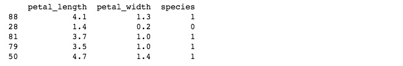

2.4 数据筛选与处理
根据前面的结论，我们首先来完成鸢尾花的二分类 。
2.4.1. 从原始数据集 iris.data 中抽取出两种鸢尾花setosa和versicolor的数据。
选中 4.数据的筛选与处理 单元格，插入新的代码单元格，输入以下代码：
# 抽取出两种鸢尾花setosa和versicolor的数据
iris_bi_dataset = iris.loc[iris.species.isin(["Iris-setosa","Iris-versicolor"])]
print(len(iris_bi_dataset))
运行结果为 100 ，即筛选出了100条两种鸢尾花 setosa 和 versicolor 的数据，数目与我们之前对数据集的介绍是相符合的。
iris.species.isin(["Iris-setosa","Iris-versicolor"] 是一个逻辑表达式表达式，当species 的取值在集合["Iris-setosa","Iris-versicolor"] 中时，值为True，反之则为False。
loc 函数用来进行特定行的选择。
len 函数用来统计DataFrame对象的行数。
2.4.2. 保留 petal_length , petal_width , species 三列作为二分类的的数据集
继续插入新的代码单元格，输入以下代码：
# 保留 petal_length，petal_width,species三列作为二分类的的数据集
iris_bi_dataset = iris_bi_dataset[['petal_length','petal_width','species']]
print(iris_bi_dataset.sample(5))
sample(5) 用来随机获取5个样本。关于sample函数完整的用法，请参考pandas.DataFrame.sample
运行结果如下：
2.4.3. 将 species 中的字符型量转化为数值型
当把数据集用于 机器学习 时，通常会把数据集中的 字符型 转化为 数值型 。在当前任务中，涉及到鸢尾花 两种 鸢尾花的 分类，我们将分类 Iris-setosa 使用编码 0 来表示，Iris-versicolor 使用编码 1 来表示
继续插入新的代码单元格，输入以下代码：
# 将species中的字符型量转化为数值型
iris_bi_dataset.loc[iris_bi_dataset['species']=="Iris-setosa","species"]=0
iris_bi_dataset.loc[iris_bi_dataset['species']=="Iris-versicolor","species"]=1
print(iris_bi_dataset.sample(5))
iris_bi_dataset['species']=="Iris-setosa" 是一个逻辑表达式，当数据集iris_bi_dataset中的 species 等于 Iris-setosa 时为真
iris_bi_dataset.loc[iris_bi_dataset['species']=="Iris-setosa","species"]=0 是指在iris_bi_dataset['species']=="Iris-setosa" 为真时，将 species 的值替换为0
运行结果如下：

2.4.4.将处理好的数据集重新写入csv文件
继续插入新的代码单元格，输入以下代码：
# 写成csv文件
iris_bi_dataset.to_csv("data/iris_bi.data.csv",header=None,index=None)
将会在 data 文件夹下看到名为 iris_bi.data.csv的csv文件。
to_csv 函数的作用是将DataFrame对象 iris_bi_dataset 写成 csv文件。to_csv 函数必要的参数时文件的名称。header=None 和 index =None 表示在写入时不包括列的标题和行的索引。
目前为止，我们得到了一个中间产品，就是处理过的csv文件，文件中仅包含两个属性和两个类别，接下来，我们将在这个基础上，首先完成鸢尾花的二分类。
参考文献
1.pandas.DataFrame选取/排除特定行 https://blog.csdn.net/yuanxiang01/article/details/79285769